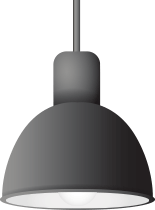
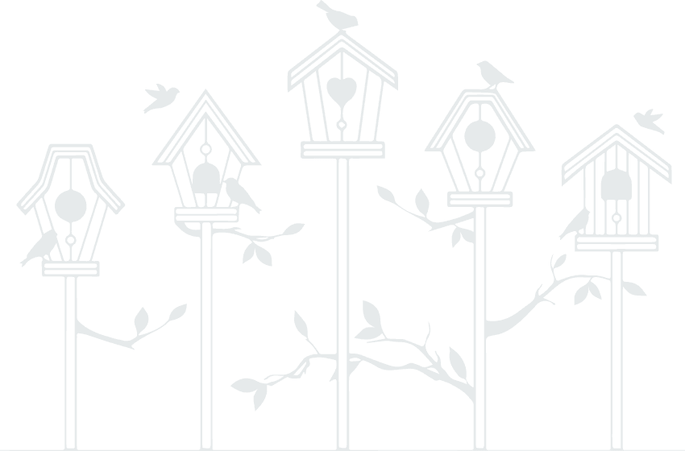
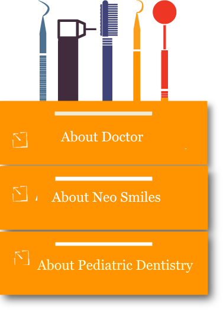
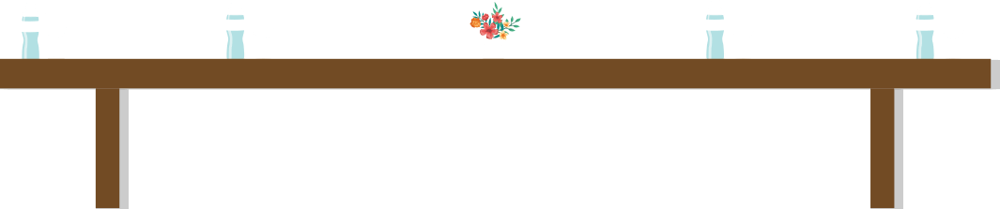
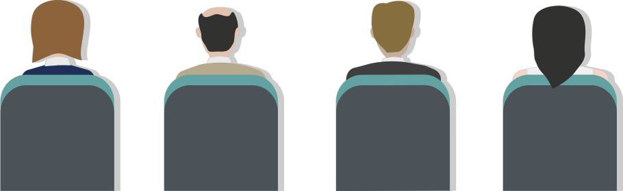
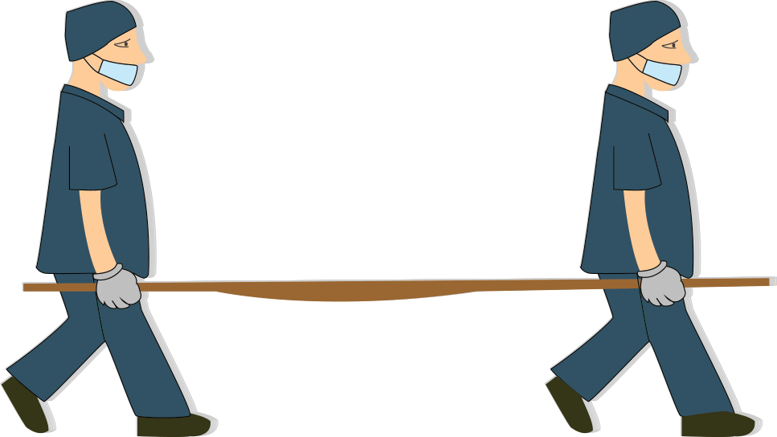

about doctor Parth Barot
Neo smiles Dental care is preciously designed speciality base dental clinic 3 YRS post graduation in department of paediatric and preventive
dentistry at daswani dental college and research centre, kota. Dr. Parth Barot is a well known Dentist in Noida and has an experience of %experience% years in this field. Dr. Parth Barot practices at Roots Dental Clinic in Noida. The services provided by Dr. Parth Barot at %clinicname% include pediatric endodontic procedure, root canal procedure, space maintainers, laminates & veneers, fluoride application, post & cores, obturators, implant placement, restoration (amalgam & composite &gic), oral prophylaxis procedures, extractions & minor surgical procedures, removable appliance, banding and bonding, bleaching, crown preparations.

Pedodontics or Pediatric Dentistry refers to a branch of dentistry that specializes in dental care for children under the age of 18. Pediatric dentists require an extra two to three years of dental training that prepare them in meeting the unique dental needs of infant, children, and adolescent dental care. This also includes those with special health care needs.
Differentiating itself from regular dentistry, pediatric dentistry emphasizes the establishment of trust and confidence in children with their dentists. Consequently, one of the main components of pediatric training is child psychology. This manifests itself in special office designs, different communication style, and an emphasis on teaching preventative dental habits to children in an effort to make dental visits enjoyable.
For children, pedodontics place special importance in preventing tooth decay. Studies show that poor oral health care in children lead to decrease school performance and poor social relationships. Therefore, pediatric dentists give advice on how to make teeth strong, the importance of developing healthy eating habits, and other ways to prevent cavities from occurring.
Additionally, pediatric dentists work towards the maintenance of primary teeth (baby teeth) until they are naturally lost. This is due to the importance they serve in permitting children to chew properly and therefore maintain good nutrition, its role in speech development, and the way it aids permanent teeth by saving space for them.
The role of the pediatric dentists changes as children enter adolescence. Recognizing the growing importance of appearance and self-image in their clients, pediatric dentists work to ensure that adolescents' dental needs are met. Preventative dental health care is emphasized and when necessary, information is provided to adolescents about subjects such as wisdom teeth, tobacco use, sealants, and oral piercing.
Pedodontics not only aids in the dental health of children but serves as an educational tool for parents. It is recommended that a dental visit should occur between shortly after the presence of the first tooth in a child to that child's first birthday. This is because early mouth examinations aids in the detection of the early stages of tooth decay and can therefore be immediately treated. Additionally, parents are given a program of preventative home care (brushing, flossing, fluorides), a caries risk assessment, the latest facts on finger, thumb and pacifier habits, advice on preventing injuries to the mouth and teeth of their children, and information on growth and development.
Neo smiles Dental care is preciously designed speciality base dental clinic
It has dedicated play area for the kids and premium waiting longue for adult patients.
Clinic is located in the centre of the city which makes it easily approachable for all patients.
Neo smiles dental care is equipped with all the latest armamentarium to provide top-notch Dental treatments to infants to adults
Dr. Parth Barot , B.D.S. , M.D.S.
Dr Parth Barot graduated from Bharati Vidyapeeth University Pune. (2013) and post graduated from Rajasthan Health Science University, Jaipur. (2017) with a specialty in Peadiatric Dentistry.
Dr. Parth Barot has started his privet practice at Neo smiles Dental Care, Bharuch. Neo Smiles Dental Care is specially designed dental Clinic for peadiatric patients and equipped with all the advanced armamentarium to provide best possible treatments.
Dr.Parth Barot is also associated with Sevashram Hospital and Narayan Charitable Hospital as a Consultant Pedodontist.
The services provided by Dr. Parth Barot at Neo Smiles Dental Care include pediatric endodontic procedure, root canal procedure, space maintainers, laminates veneers, fluoride application, post cores, obturators, implant placement, restoration (amalgam composite gic), oral prophylaxis procedures, extractions minor surgical procedures, removable appliance, banding and bonding, bleaching, crown preparations.

Dr. Parth barot

FACILITIES
->
DEDICATED PLAY AREA FOR KIDS
->
DIET AND ORAL HYGIENE MAINTENANCE COUNSELING FOR PATIENTS AND PARENTS
->
EMPANELLED ON ONGC

Gallery




->
PROTECTIVE MOUTH GUARDS FOR KIDS
->
DENTAL IMPLANTS AND REPLACEMENT OF MISSING TEETH
->
ORTHODONTIC TREATMENT /BRACES
->
SPECIALITY BASE CONSULTATION
->
TREATMENT FOR DENTAL TRAUMA


More services